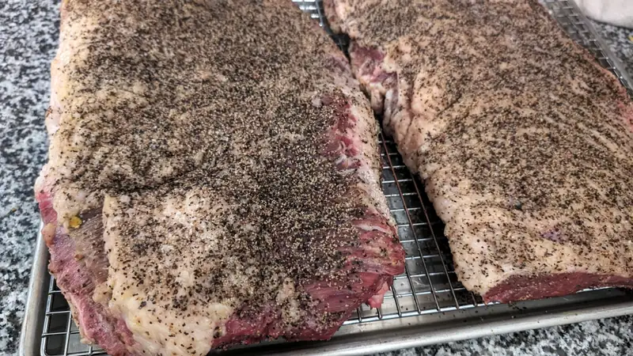
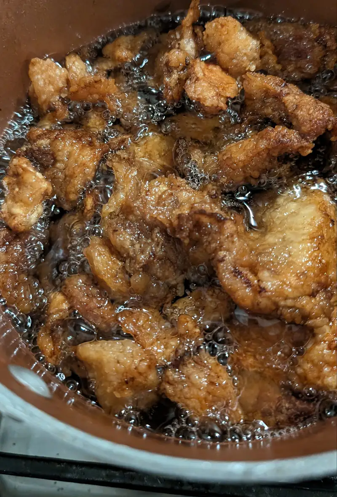
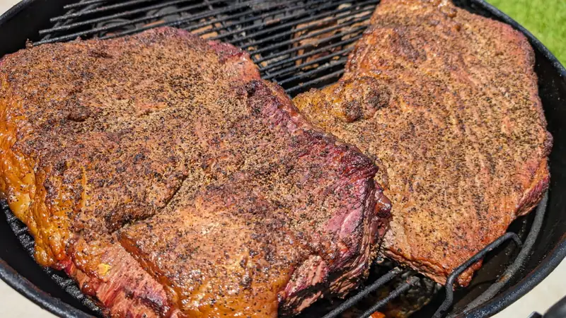
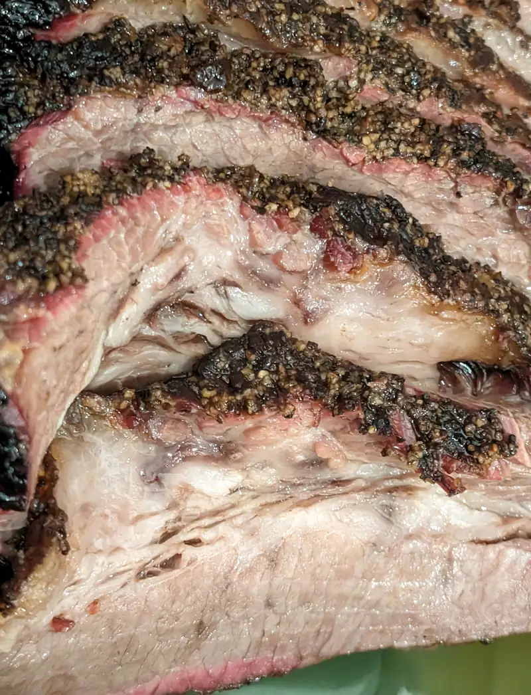
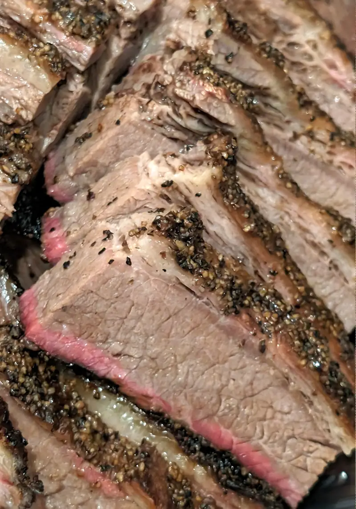
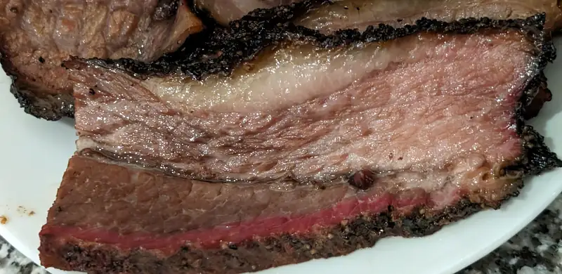

Brisket Ahumado
"Haced lo que vieres a donde fueres".. o algo así, no? bueno, pues donde estamos esto es lo que vemos... muchas vacas y l brisket, o el pecho, como maaas o menos lo llamaríamos en México, porque sí, la parte magra es lo que se extrae como pecho en México, también tiene otra parte que es mucho menos magra y suave, o en inglés: flat & point, respectivamente. Bueno, el caso es que como es de esos músculos que ayudan a sostener parada a la res, tiene mucho tejido conectivo y tiende ser muy duro si no le das el tratamiento correcto, _i.e._ no sería muy buena idea tratar de sacarle cortes y sellarlos como si fuera un ribeye, por ejemplo; no, este bello y aerodinámico trozo de carne necesita que lo trates con calor bajo por mucho, mucho tiempo. Y ya hablando de ahumarlo, pues en Texas se usa con un poco de sal y MUCHA pimienta molida y ya, párale de contar. En cuanto a métodos, cuando empecé a tratar de aprender como se hace, ví muchos videos donde le hacen como que mucho ritual confuso. No fue hasta que me leí del método 4-2-8 que me animé más a intentar hacer un brisket bien, bien; digo, es un pedazo muy grande e carne como para que quede malo (como el primero que hice que quedó como carne seca :( ).
El método 4-2-8, o a veces 4-2-10.. o.. bueno, el caso es que el último número puede variar. El nombre del método te dice lo que tienes que hacer:
- 4 horas a temperatura baja (~275F) es el tiempo durante el que se va a poder impregnar la carne con los sabores y colores del humo (ese tono rojo oscuro tan característico de la carne ahumada). En este paso, la temperatura interna de la carne va desde la temperatura inicial a ~160F que es donde normalmente la temperatura se mantiene sin seguir aumentando porque está "sudando" su grasa y algunos otros líquidos. En los videos complicados hacen mucho cuento de este periodo de la temperatura, unos dicen que lo dejes hasta que vuelva a aumentar la temperatura, otros dicen que le subas al fuego para forzarlo a que siga aumentando. Y pues sí, con éste método lo que se hace es aumentar la temperatura para que deje de sudar sus líquidos y se empiece a secar.
- 2 horas de fuego alto (400F) que van a hacer que se haga esa costra crujiente en el exterior. Durante este periodo la temperatura sube arriba de esos ~160F para seguir cociendo la carne. Al final de este paso, la carne va a estar "bien cocida¨, i.e. no va a estar roja, pero por la naturaleza del corte, va a estar muy dura.
- 8, 10 o lo que necesite a fuego muy bajo (220~230F), ya envuelto en papel de carnicero o papel aluminio. Para este paso se puede dejar en el asador o lo puedes pasar a un horno más estable dentro de la casa. Durante este paso,al mantener la carne envuelta en papel aluminio y/o de carnicero, se van a mantener más líquidos en la carne. La temperatura seguirá subiendo hasta que.. pues hasta la temperatura que consideres necesario y para mí, personalmente, va a depender de la calidad de la res (usando las categorías de Estados Unidos): la barata (choice) ~204F, la mejorcita (prime) ~198F y así sucesivamente, recordando que a nivel del mar, el agua hierve a 212F, así que aquí en un poco más de altitud, está más cerca de empezar a secarse, pero ese es el paso necesario para que se derrita y relaje el tejido conectivo que hace que la carne esté dura.
Una vez que logra la temperatura final deseada, algunas guías dicen que pases la carne a una hielera para que se enfríe poco a poco, pero para ser sinceros, le apago al horno y ahí se queda hasta el siguiente día para rebanar. asdf Dave Grohl video
Para hacer este brisket se empieza con quitarle el exceso de grasa y darle una forma más aceptable para que se pueda cocer parejo. Este corte, así como te lo venden, trae un pedazo grande de grasa dura que no se derrite y de un lado trae una capa de grasa que a veces es muy gruesa, lo deseable de esa capa de grasa es que quede como de unos 6mm de espesor para que (DICEN), al derretirse, mantiene humectada a la carne. Además, casi siempre le corto de la carne magr para que quede más o menos uniforme de grosor para que no se cueza una parte más que otra. Estos retazos no se desperdician!, la grasa (ver abajo), se derrite para sacar manteca de res y los retazos del pecho los usamos para caldo de res.
Ok, ok, ya limpia y emparejada la carne, en la tradición tejana se embarra de mostaza de la baratita, nada de mostaza de grano ni nada de eso, nom'as es para que pegue la sal y la pimienta.
 {kind=link}
Como decía arriba, la grasa que se le quita al limpiar la res se derrite para sacarle manteca que luego, al envolver, se le regresa un poco, para, como dijo Homero: más sabooooor asdf. Normalmente, y si el tiempo lo permite, dejo reposar la carne toda una noche para que se seque y se impregne mejor la sal, pero realmente no es un paso MUY crítico si tienes prisa.
 {kind=link}
Ya que preparaste el ahumador, o en mi caso, el asador con carbón de un lado y unos trozos de leña para ahumar (yo uso una mezcla como 70-30 de mesquite y hickory), pones la carne a ahumar durante esas horas prescritas en el método
 {kind=link}
Aquí me brinqué los otro pasos porque pues... ya era tarde, pero ya rebanado, según los pedantes, el brisket debe estar suave como para separarlo con las manos, pero no tan aguado que se desmorona solo, y de aspecto, debe tener una buena costra y un anillo rosa en todo el exterior, que indica su exposición al humo durante esas primeras 4 horas.
   {kind=link}
{kind=link}
{kind=link}